참고한 글
----------------------------------------------------------------------------------------------------------------------------------------------
두번째 글 보고 구플베 클라만 용량 세이브 되는 줄 알았는데
해보니까 그냥 pc 공식 클라도 다클라 할 때 용량 세이브 되더라고
4계정 키우고 있어서 자동로그인 겸 손리세용으로 니케 4개 깐다고 100기가씩 먹었는데
이렇게 하고부터 대충 30기가 선에서 다클라 킬 수 있게 됨
그리고 업데이트 날 패치 한 번만 해도 다클라까지 다 적용됨
글 형식은 저 위에 공지 첫 번째 글 그대로 빌림
보통 다클라는 손리세용이니까 리세 가이드로 적겠음
리세 아니어도 다계정 키우는 사람도 하면 좋음
-----------------------------------------------------------------------------------------------------------------------------------------------
[방법]
1. PC 공식 니케 클라이언트를 설치한다
https://nikke-global.com/download/pc-download6/index.html
2. 손리세 가이드를 참고하여 일회용 메일로 계정 하나를 만들어 로그인하고
인게임 설치를 진행한다
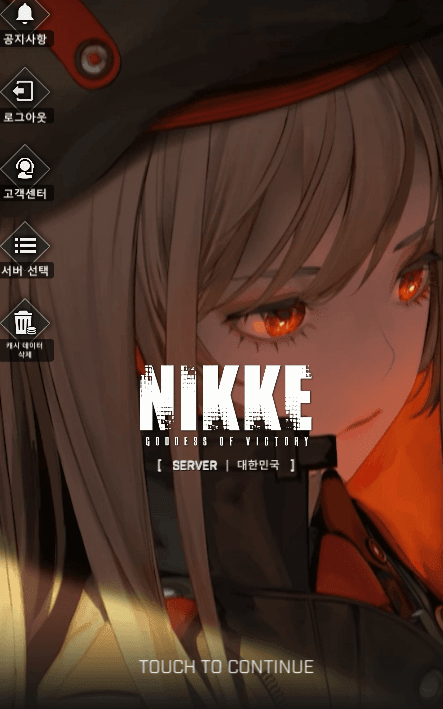
다 설치되면 대충 이런 느낌으로 TOUCH TO CONTINUE가 나올거임
3. 니케를 종료하고 런처 창을 띄운다
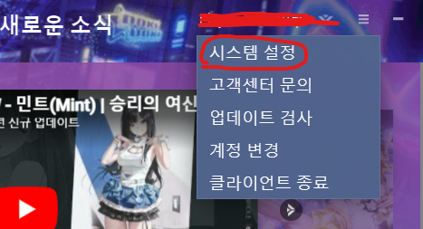
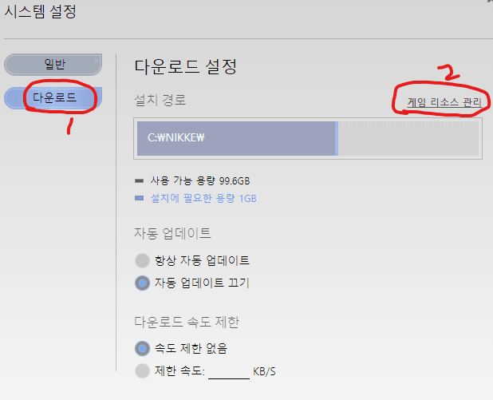
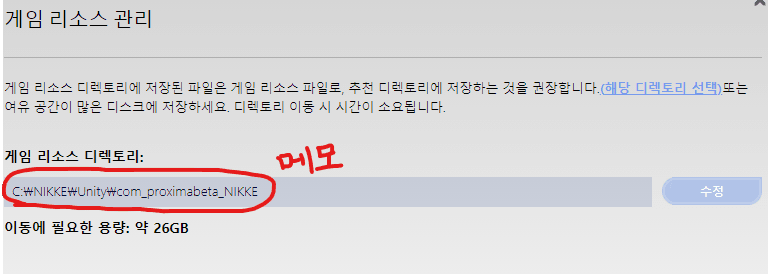
위와 같이 시스템 설정 - 다운로드 - 게임 리소스 관리를 눌러 게임 리소스 디렉토리 주소를 별도로 메모한다
여기선 복사가 안되니 타이핑하거나 직접 경로를 들어가서 주소를 복사해도 됨
4. 런처도 끄고 니케를 설치한 폴더로 이동한다 필자는 C드라이브에 다운받았음
다클라 할 개수만큼 NIKKE2, NIKKE3, NIKKE4 등 깡통 새 폴더를 만든다
NIKKE 폴더로 들어간다
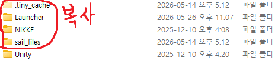
NIKKE 폴더 안에 들어가면 나오는 빨간 네모 친 폴더들을 Ctrl+C 복사한다
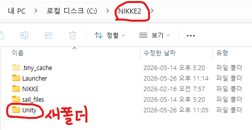
위에서 복사한 폴더들을 다클라용 NIKKE2 깡통 폴더 안에 Ctrl+V 붙여넣기하고
NIKKE2 폴더 안에 깡통 새폴더를 생성하고 이름을 Unity로 바꾼다
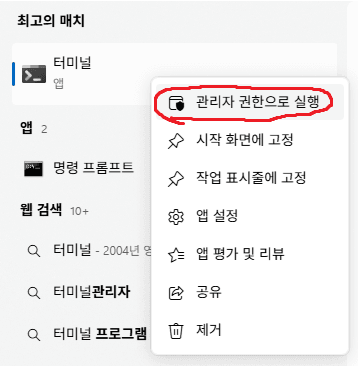
터미널을 관리자 권한으로 실행하고
cmd 입력 후 엔터
mklink /d "NIKKE를 NIKKE2로 이름만 바꾼 경로" "니케 피시 클라 게임 리소스 디렉토리 경로" 입력하고 엔터
(글쓴이는 아래 그림과 같이 mklink /d "C:\NIKKE2\Unity\com_proximabeta_NIKKE" "C:\NIKKE\Unity\com_proximabeta_NIKKE" 입력함
첫번째 경로는 위에서 메모한 게임 리소스 디렉토리 경로에서 NIKKE를 NIKKE2로 바꿔준 것 뿐임. NIKKE3, NIKKE4 폴더도 똑같이 하면 됨)
명령 성공하면 터미널에 "~에 대한 기호화된 링크를 만들었습니다."라고 나오고
NIKKE2 폴더 - Unity 폴더 안에 'com_proximabeta_NIKKE'라는 이름의 바로가기 아이콘이 생긴 폴더가 생기면 성공
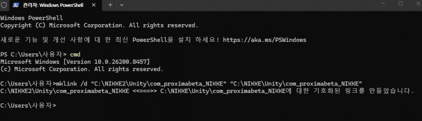
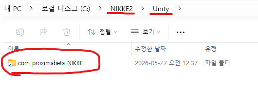
5. 다시 NIKKE2 폴더로 돌아와서 Launcher 폴더로 들어간다
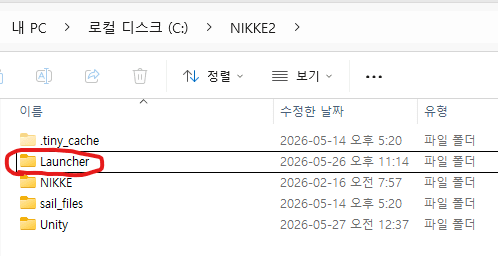
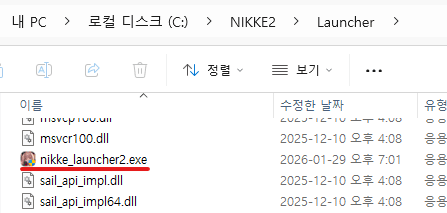
nikke_launcher 이라는 파일이있을거임 이름 변경으로 뒤에 숫자를 붙여준다.
폴더숫자와 똑같을 필요는 없지만 똑같으면 보기 좋음
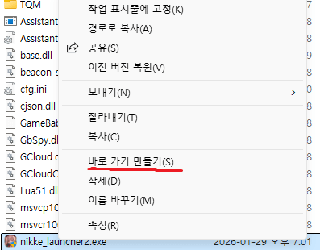
우클릭해서(안뜨면 우클릭 한번 더 눌러서) 바로가기를 만든다
바로가기 파일은 이름을 적당히 변경해서 바탕화면에 잘 정리하면 된다
(내 경우 NIKKE2로 정했음)
6. 다클라 하고 싶은 개수만큼 NIKKE3, NIKKE4... 등등을 위의 4번과정부터 반복하면 된다
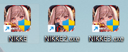
그럼 각 폴더는 이런 상황임
Nikke -> nikke_launcher.exe -> NIKKE 바로가기
Nikke2 -> nikke_launcher2.exe -> NIKKE2 바로가기
Nikke3 -> nikke_launcher3.exe -> NIKKE3 바로가기
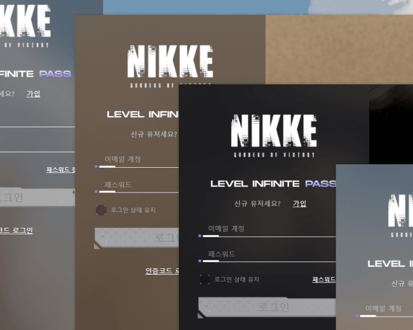
각 바로가기를 실행해서 이렇게 창이 여러개 뜨면 성공임
이제 리세할 사람은 손리세 가이드에 따라 리세를 진행하거나
다계정 키우는데 일일이 로그아웃하기 귀찮은 사람은
클라마다 다른 계정으로 로그인 해둬서 편하게 자동로그인 쓰면 됨
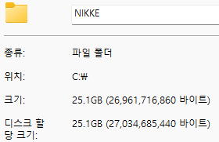
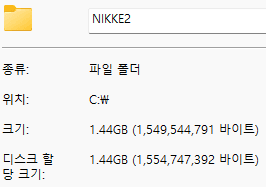
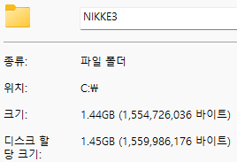
용량도 한 개 설치한 만큼만 차지하고
클라 1개당 약 1.45기가씩만 투자하면 다클라 가능한 걸 확인할 수 있음
구플베용 구글 pc클라의 용량 쌀먹은 구플베 클라 쓸 때 용량 22기가 아끼는 팁 이 글 따라하면 됨
마저 리세 하는 법 적으면 (원글 그대로 베낌)
로그인하면 tbs라고하는 프로그램이 실행되면서 메모리를 존나 처먹음
그래서 리세할때는 작업표시줄에 니케가 막 6개 켜져있을탠데 (3배럭기준)
필요없는 클라이언트는 정리하고 이렇게 3개만 유지하는걸 추천함
리세끝나고 계정 바꿀때는 계정변경 버튼누르면됨
Q. 화면이 너무커서 리세하기 힘들어요
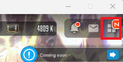
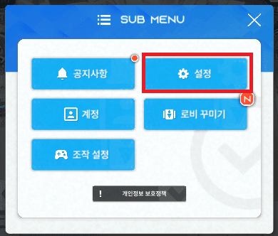
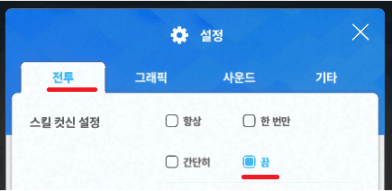
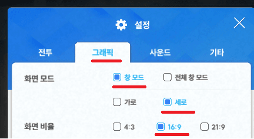
일단 리세하나 한 다음 이렇게 세팅하고 다시 껐다 키면 적당함
글의 내용과 스샷은 손리세 가이드에 있는 멀티 가이드를 참고했음